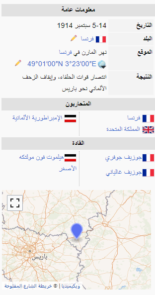
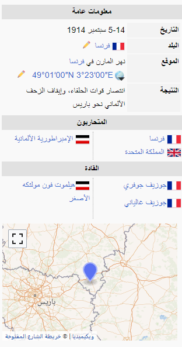
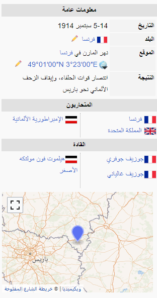

"width=200"

"width=200"
في 3 أغسطس 1914 أعلنت الإمبراطورية الألمانية الحرب على فرنسا، وقامت بغزو بلجيكا. وفي اليوم التالي قامت حكومة بريطانيا بإعلان الحرب على ألمانيا لانتهاكها حياد بلجيكا. وفي يوم 7 أغسطس خطت أولى الوحدات البريطانية على أرض فرنسا لمساعدة حليفتها فرنسا. قام القائد الفرنسي العام جوزيف جوفري بشن هجوم على الحدود الألمانية الفرنسية، وبالرغم من أن جوفر لم يستبعد أن يهجم الألمان عبر بلجيكا المحايدة، لكنه لم يتوقع أن ذلك الهجوم هو الهجوم الرئيسي، وظل مشتبكاً فيما اعتقد أنه المعركة الأساسية (معارك الحدود). . رغم أن معارك الحدود، التي استمرت من 14 إلى 25 أغسطس اعتبرت معارك ثانوية مقارنة بمعركتي لياج والمَرن، إلاّ أن معارك الحدود قد كلفت الفرنسيين والبريطانيين حوالي 300,000 جندي ما بين قتيل، وأسير، وجريح.
The First Battle of the Marne or known in France as the Miracle on the Marne (French: miracle de la Marne) was a battle of the First World War fought from 5 to 12 September 1914.[4] The German army invaded France with a plan for winning the war in 40 days by occupying Paris and destroying the French and British armies (Allies/Entente). The Germans had initial successes in August. They were victorious in the Battles of Mons and the Frontiers and overran a large area of northern France and Belgium. In what is called the Great Retreat the Germans pursued the retreating Franco/British forces more than 250 km (160 mi) southward. The French and British halted their retreat in the Marne River valley while the Germans advanced to 40 km (25 mi) from Paris.

"width=200"